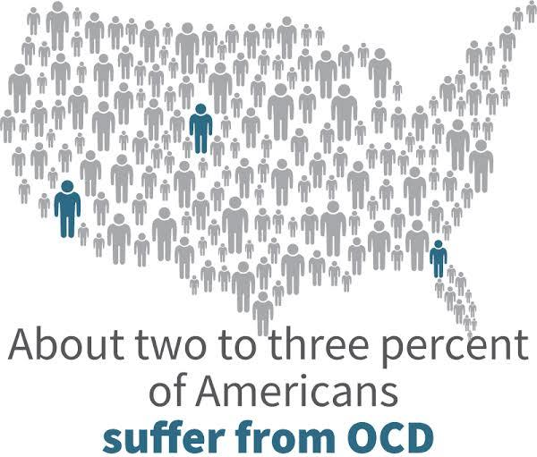

Obsessive-Compulsive Disorder(OCD) is a common, chronic, and long lasting disorder in which a person has uncontrollable, reoccurring thoughts (obsessions) and/or behavior (compulsions) that he/she feels the urge to repeat over and over. Engaging in compulsive behavior usually stops the obsessions, but only temporarily. And unfortunately, this temporary relief reinforces the compulsive behavior because it seems to work.
People with OCD, usually live with high levels of shame and embarrassment about their symptoms. These people live in a secret world of obsessive thoughts and compulsive behaviors. A great deal of energy might go into keeping rituals secret.
A women who checks appliances in the kitchen repeatedly before leaving the house might not tell about her fears to family members, but in this process she may inadvertently turn the stove on, thus making it necessary to check it over and over. People who take hour-long showers might get afraid to share why each body part must be washed in a particular order and for a certain length of time. Often the family members believe they can help the person overcome the compulsions by giving in to their demands but, such rescue behaviors only serve to feed OCD symptoms.
Genetics - People with 1 degree relatives who developed OCD as a child or teen.
Brain Structure – Research suggests that specific area of brain can be identified as being affected.
Environment – Experiencing physical, sexual, or emotional abuse at young age.
"Tell your heart that the fear of suffering is worse than the suffering itself. And that no heart has ever suffered when it goes in search of its dreams”
A new treatment therapy for OCD offers the possibility that symptoms can be reduced or eliminated in eight or fewer weekly sessions lasting about 15 minutes each. Response Disequilibrium Therapy (RDx), shows promise for swift treatment of OCD. RDx establishes a controlled link between the client‘s symptomatic behavior and a positive daily activity. Positive activity may be earned by decreasing baseline level of negativity behavior. This link puts the two behaviors in disequilibrium state and thus clients will works on establishing a new equilibrium by reducing/eliminating their symptomatic behavior.
Exposure and response prevention therapy (ERP), (the current treatment of choice) the therapists expose the people with OCD to the triggers for their symptoms, like shaking hands for someone who dwells on spread of germs. Therapists help by calming the person and the exposure exercise continues until the person arousal levels recede significantly, which can take considerable time.
RDx may not work for all, but the future researches could confirm it to be an efficient and cost effective therapy.
The present global public health crisis around coronavirus (covid-19) has led to additional worries for those affected by OCD. Contaminated fears has led to more washing/cleaning. Having intrusive thoughts around passing virus on to loved ones. These are some normal worries that may cause anxiety for many even without OCD, but for people with OCD everyday normal worries can create additional anxiety and anguish.

The national OCD charity, run by and for people with lived experience of OCD www.ocduk.org
The National Institute of Mental health Health (NIMH) (January 2016)
Association for physiological science www.psychologicalscience.org